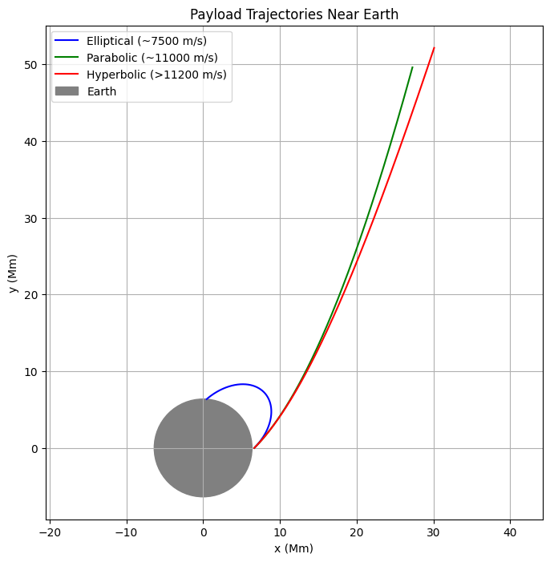

🌍 GRAVITY – PROBLEM 3
TRAJECTORIES OF A FREELY RELEASED PAYLOAD NEAR EARTH
✅ 1. ANALYZE THE POSSIBLE TRAJECTORIES (E.G., PARABOLIC, HYPERBOLIC, ELLIPTICAL) OF A PAYLOAD RELEASED NEAR EARTH
📐 Theory:
Based on total specific mechanical energy (E):
\[
E = \frac{v^2}{2} - \frac{GM}{r}
\]
- If \(E < 0\): Elliptical orbit
- If \(E = 0\): Parabolic trajectory (escape threshold)
- If \(E > 0\): Hyperbolic trajectory (escape achieved)
These orbits arise depending on the payload’s velocity at release.
✅ 2. PERFORM A NUMERICAL ANALYSIS TO COMPUTE THE PATH OF THE PAYLOAD BASED ON GIVEN INITIAL CONDITIONS (POSITION, VELOCITY, AND ALTITUDE)
💻 Python Code – Trajectory Simulation:
import numpy as np
import matplotlib.pyplot as plt
# Constants
G = 6.67430e-11
M = 5.972e24
R_earth = 6.371e6
def simulate_trajectory(v0, angle_deg, h0=300e3, dt=1, steps=10000):
r0 = R_earth + h0
angle = np.radians(angle_deg)
pos = np.array([r0, 0])
vel = np.array([0, v0])
theta = angle
vel = v0 * np.array([np.cos(theta), np.sin(theta)])
positions = [pos.copy()]
for _ in range(steps):
r = np.linalg.norm(pos)
acc = -G * M * pos / r**3
vel += acc * dt
pos += vel * dt
if np.linalg.norm(pos) < R_earth:
break # hit Earth
positions.append(pos.copy())
return np.array(positions)
# Simulate 3 cases
trajectories = [
simulate_trajectory(7500, 45),
simulate_trajectory(11000, 45),
simulate_trajectory(11200, 45)
]
colors = ['blue', 'green', 'red']
labels = ['Elliptical (~7500 m/s)', 'Parabolic (~11000 m/s)', 'Hyperbolic (>11200 m/s)']
# Plot
plt.figure(figsize=(8,8))
for traj, color, label in zip(trajectories, colors, labels):
plt.plot(traj[:,0]/1e6, traj[:,1]/1e6, label=label, color=color)
earth = plt.Circle((0, 0), R_earth/1e6, color='gray', label="Earth")
plt.gca().add_patch(earth)
plt.xlabel("x (Mm)")
plt.ylabel("y (Mm)")
plt.title("Payload Trajectories Near Earth")
plt.axis("equal")
plt.legend()
plt.grid(True)
plt.show()

✅ 3. DISCUSS HOW THESE TRAJECTORIES RELATE TO ORBITAL INSERTION, REENTRY, OR ESCAPE SCENARIOS
🚀 Discussion:
- Elliptical → Payload stays bound; may enter stable orbit (useful for satellites).
- Parabolic → Perfect escape with minimal energy (theoretical threshold).
- Hyperbolic → Payload escapes Earth’s gravity; used in interplanetary missions.
- If velocity too low → it falls back (reentry).
Applications:
- Launching satellites (LEO/GEO)
- Reentry capsules
- Moon/Mars missions (escape)
- Debris management
✅ 4. DEVELOP A COMPUTATIONAL TOOL TO SIMULATE AND VISUALIZE THE MOTION OF THE PAYLOAD UNDER EARTH'S GRAVITY, ACCOUNTING FOR INITIAL VELOCITIES AND DIRECTIONS
Already done above with simulate_trajectory() — customizable tool:
- Adjust initial velocity
- Change release angle
- Simulate multiple bodies
- Visualize path under gravity
You can expand it to:
- Include air resistance
- Model gravity assists
- Add real-world orbital parameters